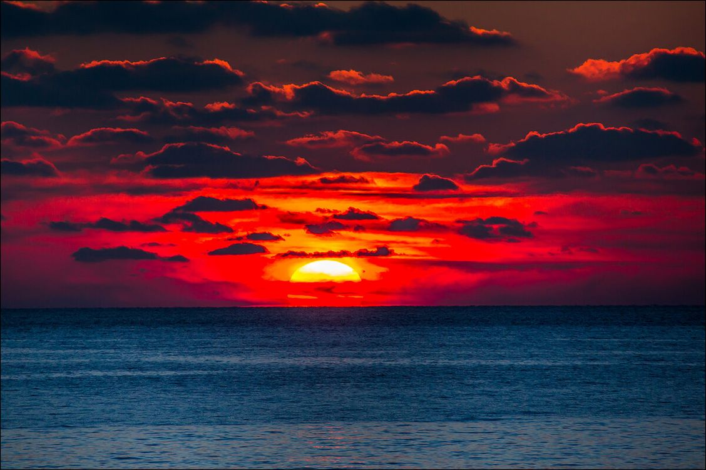

Мо́ре — часть Мирового океана, обособленная сушей или возвышениями подводного рельефа. Отличается от Мирового океана также гидрологическим, метеорологическим и климатическим режимами, что связано с их окраинным положением относительно океанов и замедлением водообмена из-за ограниченности связи с открытой частью[1]. Моря также отделяют друг от друга в соответствии с их флорой и фауной (например, Эгейское море находится в Средиземном море). Для фауны морей характерно наличие эндемиков[1]. У различных авторов, в частности, в Библии, морями может называться любое большое водное пространство (реки, озёра, заливы); например, Египетское море (Ис. 11:15) в Библии по разным предположениям обозначает или реку Нил, или часть Чермного моря; кроме того, там называется морем река Евфрат[2]. В толковом словаре Даля море определяется как скопление горько-солёных вод в обширных впадинах или разломах земной поверхности. Таким образом, морем называют все эти произвольно разграниченные воды в противоположность земле (суше, материку). Обычно моря сообщаются с мировым океаном посредством проливов (например, Средиземное, Чёрное и другие) и носят это название правильно. Менее законно придаётся оно солёным или пресным озёрам (например, Каспий, Арал, Мёртвое море, Байкал — «Славное море — священный Байкал»). Кроме того, морем обозначают бездну или пропасть, необъятность[3]. Объекты, именуемые морями, существуют не только на Земле: например, «Южное море» есть на Марсе и на Луне (лунным морем называется (визуально) тёмное пятно на поверхности лунного диска). При охлаждении солёная вода превращается в «морской лёд» — это происходит ниже точки замерзания для пресной воды при температуре около −1,8°C[4].
статья про пустыню
Пусты́ня — природная зона, характеризующаяся преимущественно или полностью равнинной

статья про закаты
Закат — 1. Заход за линию горизонта (солнца, небесного светила)
статья про водопады
Водопа́д — падение воды в реке с уступа, пересекающего речное русло.